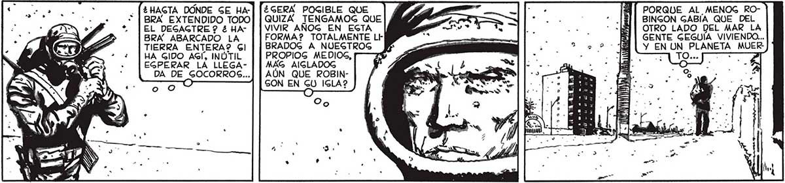
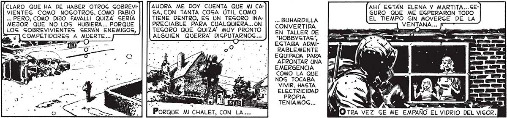

¿GERÁA POGIBLE QUE QUIZA TENGAMOG QUE VIVIR AÑOG EN EGTA FORMA? TOTALMENTE Lt BRADOG A NUEGTROG PROPIOS MEDIOS, MAG AIGLADOG AÚN QUE ROBINGON EN GU ISLA? O 38 HAGTA DONDE SE HABRA EXTENDIDO TODO EL DEGAGTRE ? 3 HABRA ABARCADO LA TIERRA ENTERA? Gl HA GIDO AGÍ, INÚTIL EGPERAR LA LLEGADA DE GOCORROS... O oo PORQUE AL_MENOG ROBINGON GABIA QUE DEL OTRO LADO DEL MAR LA GENTE GEGUIA VIVIENDO... Y EN UN PLANETA MUERA TOsa ma ¡ j A 11999) 10: le ¿l y da Y * 4 . * e) AHORA ME DOY CUENTA QUE MI CASA, CON TANTA COSA ÚTIL COMO TIENE DENTRO, EG UN TEGORO INAPRECIABLE PARA CUALQUIERA... UN TEGORO QUE QUIZA” MUY PRONTO ALGUIEN QUERRA' DIGPUTARNOS... CLARO QUE HA DE HABER OTROG GOBREVE VIENTEG COMO NOGOTROS, COMO PABLO ... PERO, COMO DIJO FAVALLI QUIZA. GERIA MEJOR QUE NO LOG HUBIERA... PORQUE LOG GOBREVIVIENTEG SERAN ENEMIGOS, -] COMPETIDORES A MUERTE... : =p O AHÍ EGTAÁN ELENA Y MARTITA...SEGURO QUE ME EGPERARON TODO EL TIEMPO GIN MOVERGE DE LA ... BUHARDILLA VENTANA... 0 CONVERTIDA EN TALLER DE "HOBBYGTAS*, EGTABA ADMÍRABLEMENTE EQUIPADA PARA AFRONTAR UNA EMERGENCIA COMO LA QUE NOG TOCABA h VIVIR, HAGTA E — AA ELECTRICIDAD 47 E PROPIA MM TENIAMOG... PORQUE MI CHALET, CON LA... y NUNCA CREÍ QUE PUDIE- AHORA PODREMOS FAVALLI CAGI NI ME DEJO TIEMPO RA CONMOVERME TANTO VOLVER A VER A LOG MIOS... NO EG TIEMPO DE EMODATE DE PABLO, ENCERRADO EN EL GOTANO... U > ¡ TÚ, FAVALLI! PERO ...¿ DE DONDE GAYENTRO DEL GARAJE ME ESPERABA UNA GORPREGA. MIENTRAS TÓ HACIAG TURIGMO NOGOTROG NOG DEDICAMOG A LA COGTURA. GALIR EN PAREJAG: POR LAG DUDAG LUCAG EGTA TERMINANDO UN TERCER TRAJE. ¡MAGNÍFICO! AQUÍ | TRAIGO LA PRIMERA REMEGA GALIR EN GEGUIDA¡ENCONTRÉ UN GOBREVIVIENTE! RAPIDAMENTE DI CUENTA A FAVALLI DE MI HALLAZGO EN LA FERRETERÍA. LUEGO, MIENTRAG FAVALLI, CON EL GOPLADOR, HACÍA VOLAR HAGTA EL ÚLTIMO DE LOG COPOG QUE HABÍAN ENTRADO CONMIGO Y LOG HACIA EGCAPAR POR EL EX |, TRACTOR. YO INFORMÉ A ELENA Y A LUCAG DE LO QUE PAGABA. DE DEGPEDIRME. POBRE CHICO... NO DEBEMOS HACERLO EGPERAR, NO GEA QUE HAGA UN DIGPARATE. NS. ¿perO como LO «e GACAREMOG ? ¡NO LLEVAMOS NADA!

